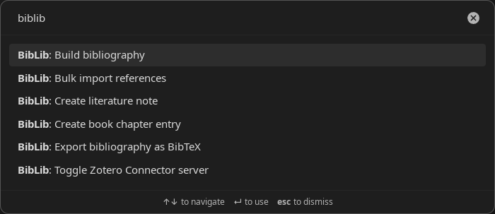
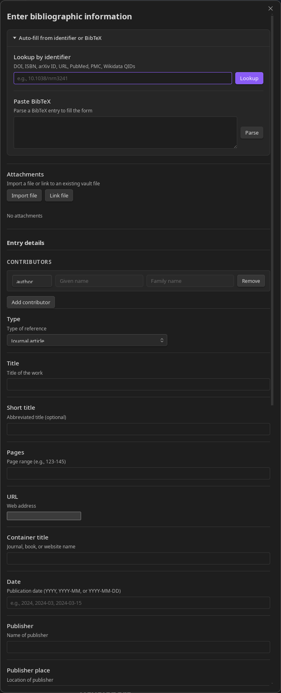
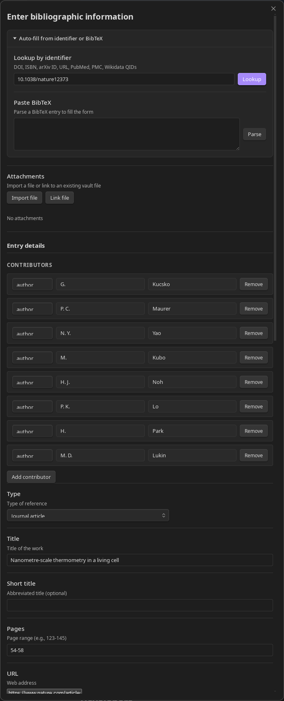

Usage Guide
Creating a literature note
Open the command palette (Ctrl/Cmd + P) and run "BibLib: Create Literature Note".

The creation modal offers several ways to populate the bibliographic fields:
- Identifier lookup: Enter a DOI, ISBN, PubMed ID, arXiv ID, or URL and click Lookup. BibLib fetches the metadata from the appropriate source and fills in the form.
- Paste BibTeX: Paste a BibTeX entry and click Parse BibTeX to populate the fields from the parsed data.
- Manual entry: Fill in the fields directly.

Select the reference type (journal article, book, etc.), add contributors (authors, editors), and fill in any other relevant fields. You can also attach files or link to related notes at this stage. Review the generated citekey, then click "Create Note".

Editing a literature note
With a literature note open, run "BibLib: Edit Literature Note" from the command palette. The edit modal opens with the note's current metadata pre-filled. After making changes, click "Save".
The edit modal also offers options to regenerate the citekey (using the current template), re-evaluate custom frontmatter fields, and regenerate the note body from the content template. Each of these is optional and controlled by a checkbox in the modal. If the citekey changes and the rename setting is enabled, the file is renamed to match.
Creating a book chapter note
Book chapters are handled as separate literature notes that link to a parent book. The parent book must already exist as a literature note in your vault.
Run "BibLib: Create book chapter entry" and select the parent book from the dropdown. Fill in the chapter-specific details — title, page range, chapter authors — and click "Create Chapter Note". Shared metadata like publisher and editors comes from the parent book note.
If the parent book's note is already open, the command "BibLib: Create chapter from current book" pre-selects it.
Using the Zotero Connector (desktop only)
The Zotero Connector integration lets you save references from your browser directly into Obsidian, using the same browser extension you would use with Zotero.
- Enable "Zotero Connector" in BibLib's settings.
- Close the Zotero desktop application — both BibLib and Zotero use port 23119, so they cannot run simultaneously.
- In your browser, click the Zotero Connector button on a page you want to save.
- The BibLib creation modal opens in Obsidian with the reference data pre-filled. PDFs are imported automatically when available.
To disable the integration, toggle the setting off or run "BibLib: Toggle Zotero Connector server".
Bulk importing references
If you have an existing library in BibTeX or CSL-JSON format, you can import it in bulk.
- Place the export file (
.bibor.json) inside your vault. If you exported from Zotero with the "Export Files" option, place thefilesfolder alongside the.bibfile. - Run "BibLib: Bulk import references".
- Select the file and configure the import options: whether to use the existing citekeys or generate new ones, how to handle attachments, and whether to skip or overwrite notes when a citekey already exists.
- Click "Start Import".
BibLib reports the results after import — how many notes were created, skipped, or encountered errors.
Generating bibliography files
To generate bibliography files for use with Pandoc or other citation tools, run one of the following commands:
"BibLib: Build bibliography" scans the vault for literature notes (identified by the configured tag), collects their metadata, and writes a CSL-JSON file (bibliography.json) and a Markdown citekey list (citekeylist.md).
"BibLib: Export bibliography as BibTeX" generates a BibTeX file (bibliography.bib) by converting the CSL-JSON metadata.
The output paths for all three files are configurable in the settings. To use the generated bibliography with Pandoc, pass it with the --bibliography flag — for example, pandoc input.md --bibliography=bibliography.json --citeproc -o output.pdf.
Browsing your library with Bases
Obsidian's Bases feature (available in version 1.10 and later) can create interactive table views of your literature notes. BibLib provides a ready-made Bases configuration with views for browsing by author, year, type, venue, reading status, and more.
See Bases View for Literature Notes for the configuration and setup instructions.